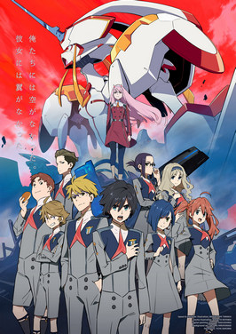
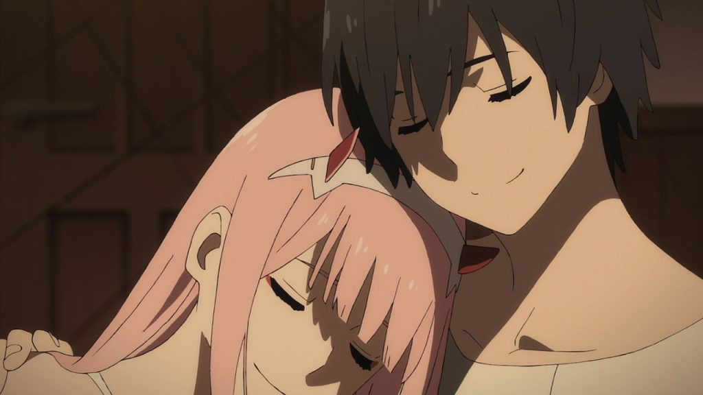

Darling in the Franxx
Действие сериала разворачивается в
недалёком
будущем. В начале XXI века некая организация APE представила
революционную
технологию использования
магматической энергии Земли. Это дало APE
огромное влияние
на международную экономику и политику и ускорило развитие человеческой
цивилизации.
Однако вследствие интенсивной добычи магмы началось стремительное
опустынивание
планеты, что привело человечество к изобретению плантаций
—
закрытых мобильных
платформ, имеющих собственные экосистемы — в которые было переведено всё
население.
Главные герои
Хиро (яп. ヒロ) /
Код 016 (яп. コード:016 Ко:до дзю:року) — главный герой,
тычинка Франкса
Стрелиция
. В детстве присвоил имена всем будущим паразитам своей
плантации.
Код 002 (яп. コード:02 Ко:до
дзэро ни) / Ноль Два (яп. ゼロツー Дзэро Цу:) / Йота[5] —
главная
героиня, загадочная девушка с красными рожками, пестик Франкса
Стрелиция
. С момента первой
встречи называет Хиро Любимым
(англ. Darling). По мере
продвижения сюжета выясняется, что
Код002 — клон принцессы
рёвозавров, созданная доктором Франксом.

-
Горо (яп. ゴロー Горо:) / Код 056 (яп.
コード:56 Ко:до годзю:року)[5] — тычинка Франкса
«Дельфиниум». Ближайший друг Хиро и Итиго. Влюблён в Итиго, и в итоге
стал отцом её
ребёнка.
-
Итиго (яп. イチゴ) / Код 015 (яп.
コード:15 Ко:до дзю:го)[5] — старшая отряда паразитов
своей плантации, пестик Франкса «Дельфиниум». Безответно влюблена в
Хиро.
-
Дзоромэ (яп. ゾロメ) / Код 666 (яп.
コード:666 Ко:до роппякурокудзю:року)[6] — тычинка
Франкса «Аргентия». Отличался глубокой верой в APE, от которых ждал
помощи.
-
Мику ( яп. ミク) / Код 390 (яп.
コード:390 Ко:до самбякукю:дзю:) /[6] — пестик Франкса
«Аргентия». Отличается жизнерадостностью, регулярно вступала в споры с
Дзоромэ,
впоследствии стала его женой.
-
Футоси (яп. フトシ) / Код 214 (яп.
コード:214 Ко:до нихякудзю:ён)[7] — тычинка Франксов
«Гениста» и «Хлорофитум». Влюблён в Кокоро, которая отказалась
пилотировать с ним ради
Мицуру. По окончании сюжетной линии стал булочником.
-
Мицуру (яп. ミツル) / Код 326 (яп.
コード:326 Ко:до самбякунидзю:року)[8] — тычинка
Франксов «Гениста» и «Хлорофитум». Имел низкие показатели синхронизации
в
«Хлорофитуме», в чём был склонен винить Икуно. После замены в «Генисту»
влюбился в
Кокоро. С детства воспринимал Хиро примером для подражания и хотел стать
паразитом, из-за
чего прошёл курс генетической модификации.
-
Кокоро (яп. ココロ) / Код 556 (яп.
コード:556 Ко:до гобякугодзю:року)[7] — пестик Франкса
«Гениста». В ходе прогулки по руинам одного из городов находит книгу о
материнстве, из
которой узнаёт о репродуктивных возможностях человека. Влюблена в
Мицуру, сочеталась с
ним браком по предложению Хиро и стала первым паразитом, родившим
ребёнка.
-
Икуно (яп. イクノ) / Код 196 (яп.
コード:196 Ко:до хякукю:дзю:року)[8] — пестик Франкса
«Хлорофитум». Влюблена в Итиго. Посвятила свою жизнь поиску технологий
замены
магматической энергии и замедлению ускоренного старения «паразитов»,
заложенного
генетически.
лови цитатку
— Почему ты опять пялишься на меня?
— Я пытаюсь придумать тебе имя.
— Имя?
— У меня хорошо получается давать имена.
— А... Ну, мне нормально с Ноль Два.
— Разве тебе нравится, когда тебя зовут по номеру?
— Когда мы умрем, то станем частью статистики. Не имеет значения, как нас
звали.
и еще одну
Хиро не любил когда 002 вела себя слишком равнодушно и однажды он
сказал:
Уж лучше кричи, но не притворяйся равнодушной.
тут еще есть чекалка, оцени
read
boom boom
Блаагодарю за внимание хорошего дня:D